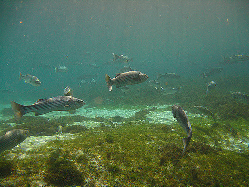

 Researchers at the Center for Quantitative Fisheries Ecology at Old Dominion University in collaboration with the Virginia Marine Resources Commission annually collect Striped Bass (Morone saxatilis) from Virginia waters of the Atlantic Ocean for age assessments. The total lengths of 1201 Stiped Bass collected in 2003 and the ages estimated from otoliths for as many as 10 fish per 1 inch length interval are recorded in StripedBass3.csv (view, download, meta)
- Separate the observed data into age- and length-samples. How many fish are in each sample?
- Add a variable to the age-sample that contains the 1 inch TL categories. Construct a table of the number (not proportion) of fish in each age and 1 inch TL category in the age-sample. From these results, compute each of the following by hand (i.e., not using R).
- How many fish in the age-sample are in the 30 in TL category?
- How many age-10 fish are in the age-sample?
- What proportion of fish in the 35 in TL category are age 9?
- What proportion of fish in the 31 in TL category are age 11?
- Construct an observed age-length key from the table above (using R). From these results answer the following questions.
- What proportion of fish in the 30 in TL category should be assigned age 10?
- How many of fourty fish in the 25 mm TL category should be assigned age 5?
- Construct a plot of the observed age-length key. Are there any potential anomalies in the plot that would suggest that a smoothed age-length key could be appropriate?
- Construct a smoothed age-length key. From these results answer the following questions.
- What proportion of fish in the 30 in TL category should be assigned age 10?
- How many of fourty fish in the 25 mm TL category should be assigned age 5?
Continue with these data here.
from Derek H. Ogle , created 08-Nov-15, updated 08-Nov-15, Comments/Suggestions.